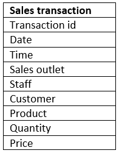
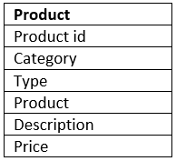

Estimated time needed: 90 minutes
Congratulations!! You have finished the modules. Now is the time to put your skills to test. Read through the scenario below.
In this scenario, you have recently been hired as a Data Engineer by a New York based coffee shop chain that is looking to expand nationally by opening a number of franchise locations. As part of their expansion process, they want to streamline operations and revamp their data infrastructure.
Your job is to design their relational database systems for improved operational efficiencies and to make it easier for their executives to make data driven decisions.
Currently their data resides in several different systems: accounting software, suppliers’ databases, point of sales (POS) systems, and even spreadsheets. You will review the data in all of these systems and design a central database to house all of the data. You will then create the database objects and load them with source data. Finally, you will create subsets of data that your business partners require, export them, and then load them into staging databases that use different RDBMS.
In this project, you will use PostgreSQL Database, IBM Db2 Database, and MySQL. These are all relational database management systems (RDBMS) designed to efficiently store, manipulate, and retrieve the data.
In this project, you will be working with a subset of data from the Coffee shop sample data.
You will use a modified version of the data for the project, so to succeed in the project, download the linked files when prompted in the instructions. You do not need to use any data from the original source.
In your scenario, you will be working with data from the following sources:
After completing this lab, you will be able to:
The first step when designing a new database is to review any existing data and identify the entities for your new system.
The following image shows sample data from each of the data sources that you will be working with to design your new central database. Review the image and identify the entities you plan to create.

Make a list of the entities you have identified.
In this task, you will identify the attributes for one of the entities that you plan to create.
Using the information from the sample data in the image from Task 1, identify the attributes for the entity that will store the sales transaction data.
Make a list of the sales transaction attributes that you identified.
Now that you have defined some of your attributes and entities, you can determine the tables and columns for them and create an ERD.
Open a new terminal from the side-by-side Cloud IDE.
Use the start_postgres command to start a PostgreSQL service session in the Cloud IDE.
Use the pgAdmin weblink to open pgAdmin in a new tab in your browser.
Create a new database named COFFEE, view the schemas in the new COFFEE database, and then start a new ERD project.
Add a table to the ERD for the sale transactions entity using the information in the following table. Consider what naming convention to use so that your colleagues will be able to understand your data and to ensure that the names are valid in other RDBMS. And use the sample data shown in the image in Task 1 to determine appropriate data types for each column.

Take a screenshot of your ERD and save it as Task3A.png or Task3A.jpg.
Add a table to the ERD for the product entity using the information in the following table. Consider what naming convention to use so that your colleagues will be able to understand your data and to ensure that the names are valid in other RDBMS. And use the sample data shown in the image in Task 1 to determine appropriate data types for each column.

Take a screenshot of your ERD and save it as Task3B.png or Task3B.jpg.
When reviewing your ERD you notice that it does not conform to second normal form. In this task, you will normalize some of the tables within the database.
Review the data in the sales transaction table. Note that the transaction id column does not contain unique values because some transactions include multiple products.
Determine which columns should be stored in a separate table to remove the repeating rows and to put this table into second normal form.
Add a new table named sales_detail to the ERD, define the columns in the new table, and delete the moved columns from the sales transaction table, leaving a matching column in each of two tables to later create a relationship between them.
Take a screenshot of your ERD and save it as Task4A.png or Task4A.jpg.
Review the data in the product table. Note that the product category and product type columns contain redundant data.
Determine which columns should be stored in a separate table to reduce redundant data and to put this table into second normal form.
Add a new table named product_type to the ERD, define the columns in the new table, and delete the moved columns from the product table, , leaving a matching column in each of two tables to later create a relationship between them.
Take a screenshot of your ERD and save it as Task4B.png or Task4B.jpg.
After normalizing your tables, you can define their primary keys and define relationships between the tables in your ERD.
Identify an appropriate column in each table to be a primary key and create the primary keys in the tables in your ERD.
Take a screenshot of your ERD and save it as Task5A.png or Task5A.jpg.
Identify the relationships between the following pairs of tables and then create the relationships in your ERD:
sales_detail to sales_transactionsales_detail to productproduct to product_typeTake a screenshot of your ERD and save it as Task5B.png or Task5B.jpg.
Now that your design is complete, you will generate an SQL script from your ERD which you could use to create your database schema. For the purposes of this project, you will then use a provided SQL script to ensure that you will be able to successfully load the sample data into the schema. Finally, you will load the existing data from the various data sources into your new database schema.
Use the Generate SQL functionality in the ERD Tool to create an SQL script from your ERD.
Download the GeneratedScript.sql file below to your local computer storage.
In pgAdmin, open the Query Tool, upload and open the GeneratedScript.sql file from your local computer storage, and then execute the script to create the tables defined in the ERD. Verify that the tables now exist in the public schema of the COFFEE database.
Take a screenshot of the tables shown in the tree-view pane on the left-hand side of the page and save it as Task6A.png or Task6A.jpg.
Download the CoffeeData.sql file below to your local computer storage.
In pgAdmin, open another instance of the Query Tool, upload and open the CoffeeData.sql file from your local computer storage, and then execute the script to populate the tables you just created.
In pgAdmin, view the first 100 rows of the sales_detail table.
Take a screenshot of the Data Output pane and save it as Task6B.png or Task6B.jpg.
The external payroll company have requested a list of employees and the locations at which they work. This should not include the CEO or CFO who own the company. In this task, you will create a view in your PostgreSQL database that returns this information and export the results to a CSV file.
In your COFFEE database, create a new view named staff_locations_view using the following SQL:
pgsql
SELECT staff.staff_id,
staff.first_name,
staff.last_name,
staff.location
FROM staff
WHERE "position" NOT IN ('CEO', 'CFO');
View all the rows returned from the view.
Save the results of the query to a file named staff_locations_view.csv on your local computer storage.
Take a screenshot of the view shown in the tree-view pane on the left-hand side of the page alongside the results in the Data Output pane, and save it as Task7.png or Task7.jpg.
A marketing consultant requires access to your product data in their MySQL database for a marketing campaign. You will create a materialized view in your PostgreSQL database that returns this information and export the results to a CSV file.
In your COFFEE database, create a new materialized view named product_info_m-view using the following SQL:
elm
SELECT product.product_name, product.description, product_type.product_category
FROM product
JOIN product_type
ON product.product_type_id = product_type.product_type_id;
Refresh the materialized view with data.
View all the rows returned from the view.
Save the results of the query to a file named product_info_m-view.csv on your local computer storage.
Take a screenshot of the view shown in the tree-view pane on the left-hand side of the page alongside the results in the Data Output pane, and save it as Task8.png or Task8.jpg.
The external payroll company have asked you to upload the staff location information to their Db2 database.
In a new browser tab, go to https://cloud.ibm.com/login, log in using your credentials, and then open a console for your Db2 on Cloud instance that you created earlier in this course.
Use the Load Data feature to load a new table named STAFF_LOCATIONS with the staff location information saved in the staff_locations_view.csv file that you exported from the view you created in Task 7.
Explore the new table and then view the data in it.
Take a screenshot of the contents of the new table and save it as Task9.png or Task9.jpg.
The marketing consultant has asked you to upload the product information to their MySQL database.
In the terminal from the side-by-side Cloud IDE, use the start_mysql command to start a My SQL service session in the Cloud IDE.
Use the browser weblink to open phpMyAdmin in a new tab in your browser.
In phpMyAdmin, create a new database named coffee_shop_products, and then import the product information saved in the product_info_m-view.csv file from your materialized view into a new table in the coffee_shop_products database.
Browse the contents of the new table.
Take a screenshot of the contents of the new table and save it as Task10.png or Task10.jpg.
| Date | Version | Changed by | Change Description |
|---|---|---|---|
| 2021-04-01 | 1.0 | Lin Joyner | Created initial version |